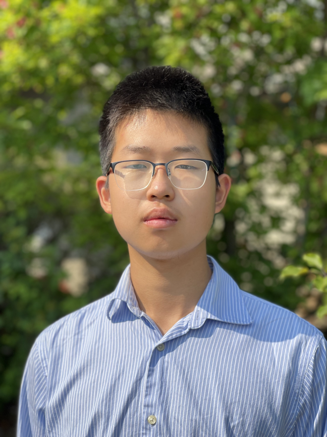

Wren lander vision alternatives, first viewport only. Everything below the fold stays as it is.VariantWidth
A · Signed letter. Same world. The person moves to the top, the h1 becomes the specific ADV line, and the before/after table sits in the hero instead of three screens down. The offer teaser collapses into one sentence. Answers "is this real?" and "is this about me?" in one screen.
B · Show it running. Same world. The hero shows the automation instead of describing it: one figure typed once, four documents fill. Loops in CSS, no library. The one authored motion moment replaces the intro trace. Most distinctive of the three; the demo has to be honest about being an example.
C · One screen. Same world, tuned for the under-a-minute reader. Pitch, three before/after rows, two real numbers and the form all in the first viewport. The long page below is for the reader who wants it. Highest expected form rate, least atmosphere.

William JinSoftware engineering, University of Waterloo · Toronto · william@wrenautomation.com
The same AUM figure is typed into your ADV, your agreements, your letters and your invoices. Four times.
I build the automations nobody at the firm has time to build: onboarding, client documents, quarterly letters, the handoffs in between. A full workday a week back for each person on your team.
The audit is free. After that you pay by milestone, and if a milestone doesn't give the hours back, you don't pay for it.
Your week, before and after
Manual workAfter we build it
The AUM figure typed into the ADV, the agreement, the letter and the invoice.Entered once. All four pull it from there.
The onboarding packet made from the last client's, find and replace.Generated from the intake form.
Performance numbers pasted into the quarterly letter.The letter pulls the numbers in itself.
Fee invoices checked against the agreement one at a time.Checked automatically. You see the ones that don't match.
↓ Case studies, what this proves, what gets automated first, the offer, questions, form. Unchanged.
Type the AUM figure once. Every document that needs it fills itself.
The ADV, the agreement, the quarterly letter, the fee invoice. Someone at your firm types the same number into each of them. I build the piece in the middle, inside the tools you already use. A full workday a week back for each person on your team.
Get in touchThe audit is free. You pay by milestone, after it runs.
William Jin, software engineering at Waterloo. I write the code myself.
Entered onceexample figure
AUM, from the custodian feed$84,200,000
ADV Part 2
$84,200,000
Agreement
$84,200,000
Q3 letter
$84,200,000
Fee invoice
$84,200,000
Change it once and all four update. The person who used to type it checks the ones that don't match.
↓ Before/after table, case studies, the offer, questions, form. Unchanged.
A full workday a week back for each person on your team.
The same AUM figure lives in your ADV, your agreements, your letters and your invoices, and someone types it four times. I build the piece in the middle.
Manual workAfter we build it
AUM typed into four documents.Entered once. All four pull it.
Onboarding packet, find and replace.Generated from the intake form.
Fee invoices checked one at a time.Only the mismatches reach you.
6 to 7 hrsa week back per person. Policy search for federal staff, Government of Canada, still in use.
200 hrsof citation lookups automated for a University of Alberta lab, still in use.
William Jin, software engineering at Waterloo. The person on the call is the person who builds it.
↓ Case studies in full, what this proves, what gets automated first, the offer, questions, about. Unchanged, for the reader who wants the long version.